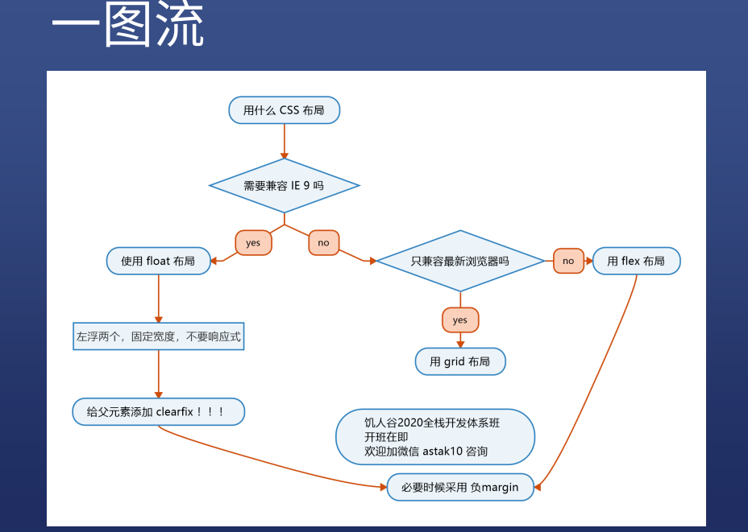
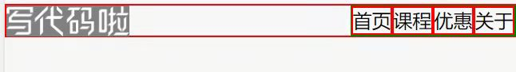
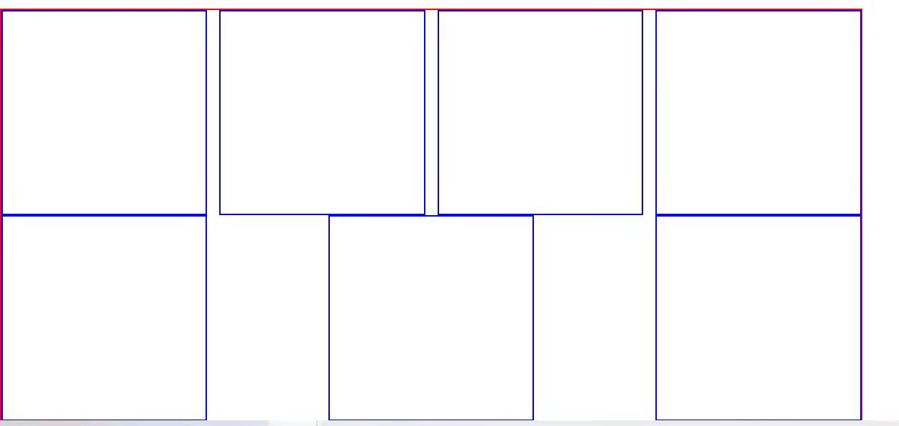

CSS布局
CSS 布局
- 布局的选择：

float 布局
步骤：
- 在子元素上加 float:left 和 width
- 在父元素上加 .clearfix (忘了加方方会弄死你的，哈哈哈)
1 | .clearfix::after{ |
【经验】
- 最后一个子元素不设 width,或者设置 max-width
- 图片设置 max-width:100%
- 如果图片/背景色 下面有突出，就用 vertical-align: top/midden;
- 加border调试时，会干扰宽度，可以将border，换成outline
- (块级元素block,宽度固定)–居中的方法：margin:0 auto;最好写成 margin-left:auto; margin-right:auto;(这样就不会覆盖原有的上下margin)
- -margin: 当进行float 平均布局时，会存在最后一个元素，因父元素宽度不够，直接换行的情况，此时只需要在原父元素里，增加一个子元素的父元素div class=”xxx”,加一个margin:-6px(举栗子)
- 不需要做响应式，因为手机上没有IE，而这个布局是专门为IE准备的
- IE６／７存在双倍margin bug, 解决办法有两个：
- 一是将错就错，针对IE 6/7把margin 减半
- 二是神来一笔，再加一个display: inline-block
应用实践： float布局
预览地址：
float布局要程序员自己计算宽度，不灵活，用来应付IE足以
flex 布局(弹性盒)
首先要让一个元素变成flex 容器
1 | flex container 属性: |
1 | flex item 属性： |
实践：用flex做两栏、三栏、四栏、平均布局，也可组合使用
- 预览地址:
经验
- 永远不要把 width 和 height 写死，除非特殊说明
- 用 min-width / max-width / min-height / max-height
- flex 可基本满足所有需求
实战分析：

- 想让导航栏去到右边的两种写法
- 在父元素上设置 justify-content: space-between;
- 或者在导航栏上写 margin-left:auto
- 在写平均布局时，即使使用justify-content: space-between 也无法满足要求
 - 第一行是对的，但是第二行就错了，所以还是需要用到 -margin
1 | <div class="imageList"> |
- 首先在 image 上加一个 wrapper div,然后再加上 负margin,负margin的值就是每个margin 的 margin-right 的值
Grid 布局–功能最强大的布局
- 二维布局用Grid,一维用flex
成为container
1 | .container { |
行和列
1 | /* 表示3行5列 */ |
fr– free space
1 | .container { |
用fr 来实现平均布局，就不需要写 -margin 了
Grid 用法总结：
- 用grid-template-areas 设计大致的布局
1
2
3
4
5
6
7
8
9
10.container {
display:grid;
grid-template-columns: repeat(5,50px);
grid-template-rows: auto;
grid-template-areas:
"header header header header"
"main main . sidebar"
"footer footer footer footer";
/* . 是 empty 空白区域 */
} - 空隙 gap
1
2
3
4
5
6.container {
grid-template-columns: 100px 50px 100px;
grid-template-rows: 80px auto 80px;
grid-column-gap: 10px;
grid-row-gap: 15px;
}
- Grid布局尤其适合不规则布局
- 代码示例：
All articles in this blog are licensed under CC BY-NC-SA 4.0 unless stating additionally.